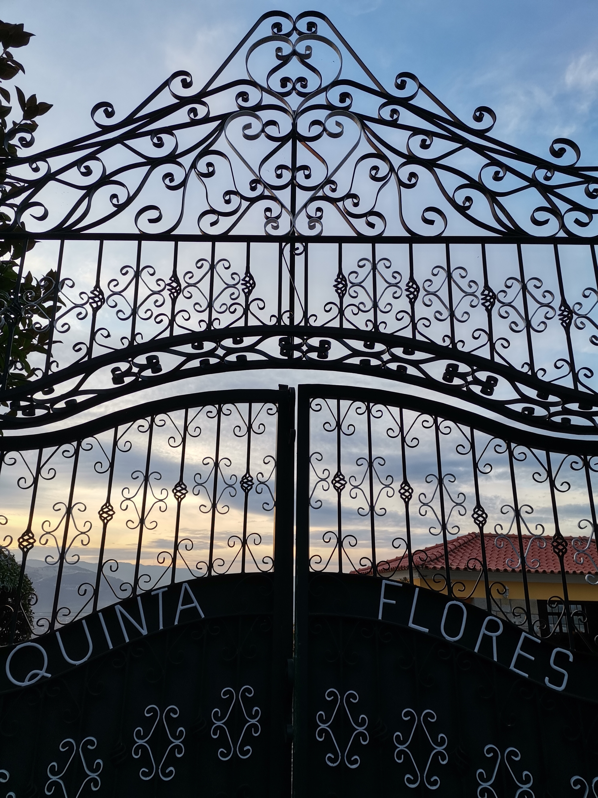
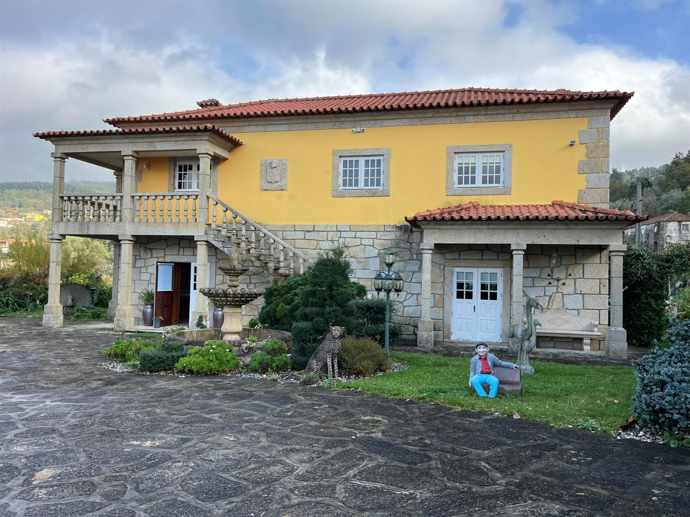
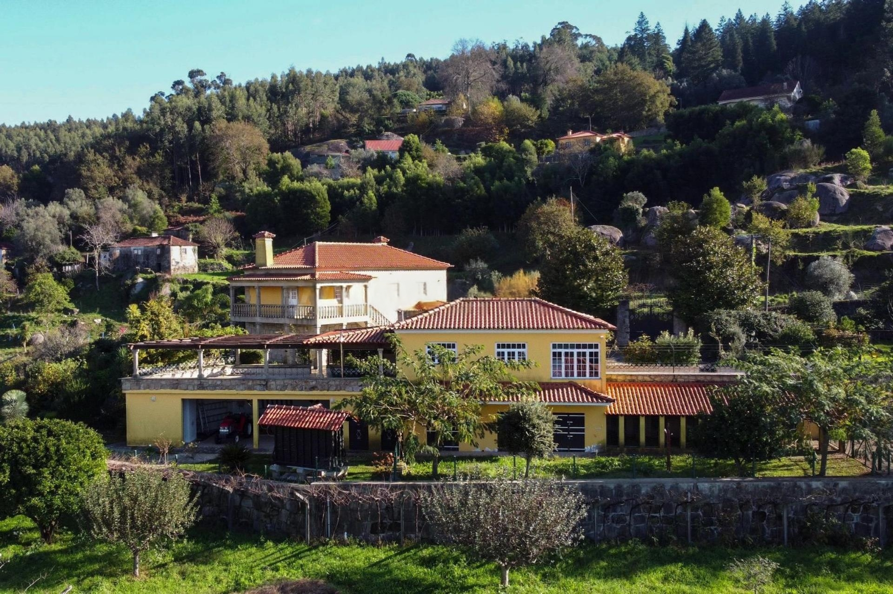
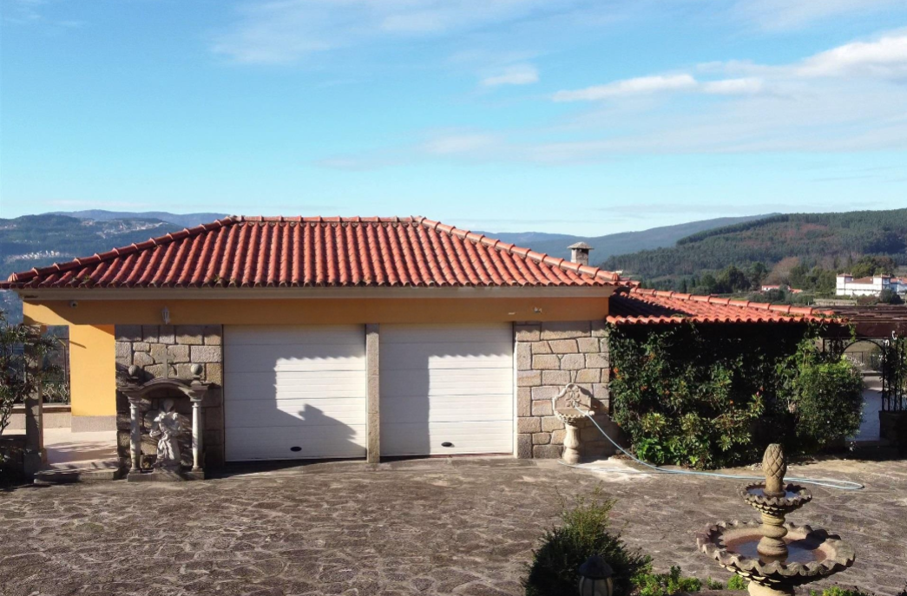
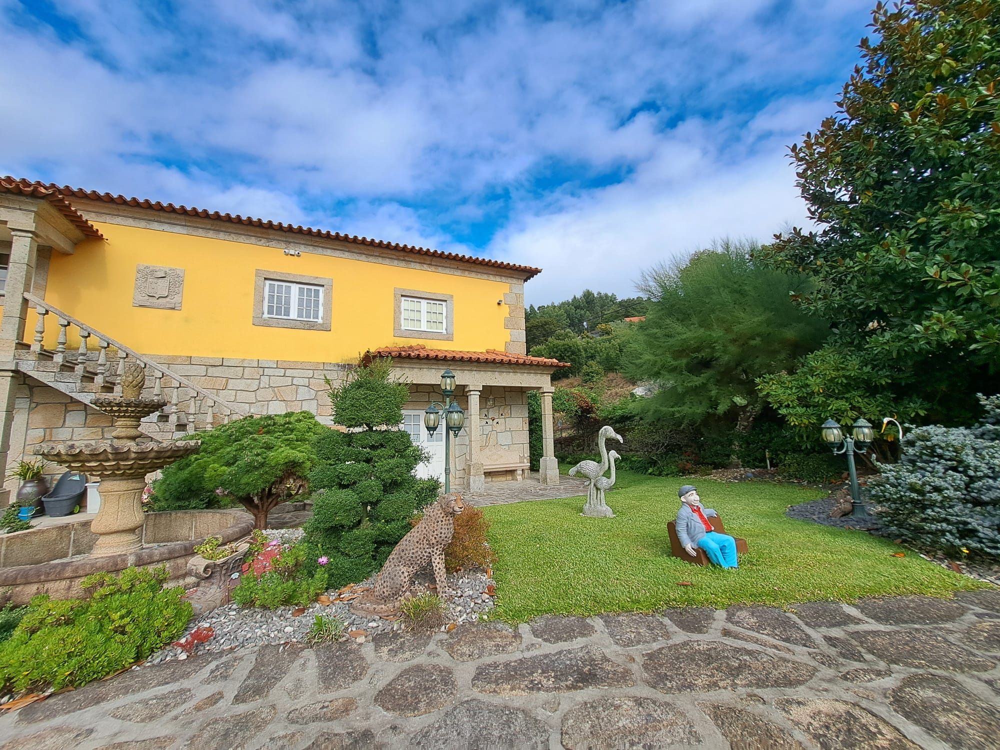
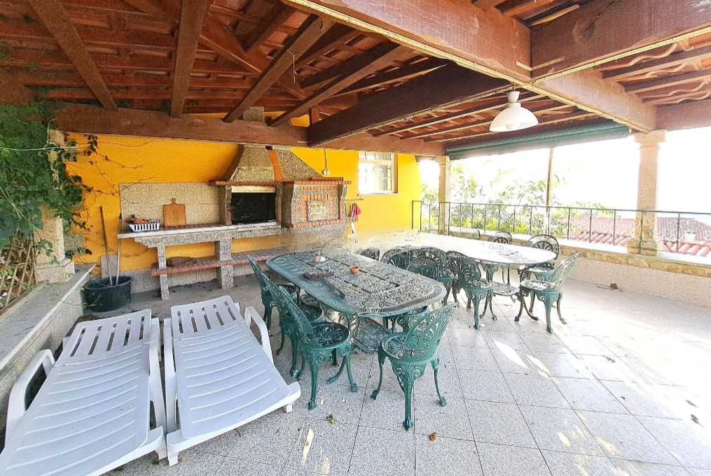
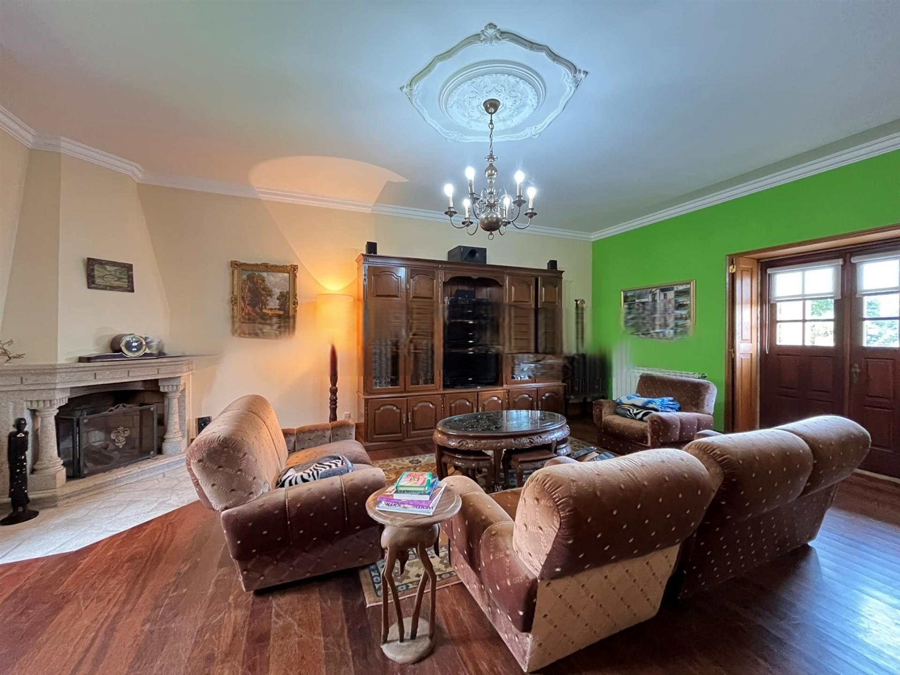
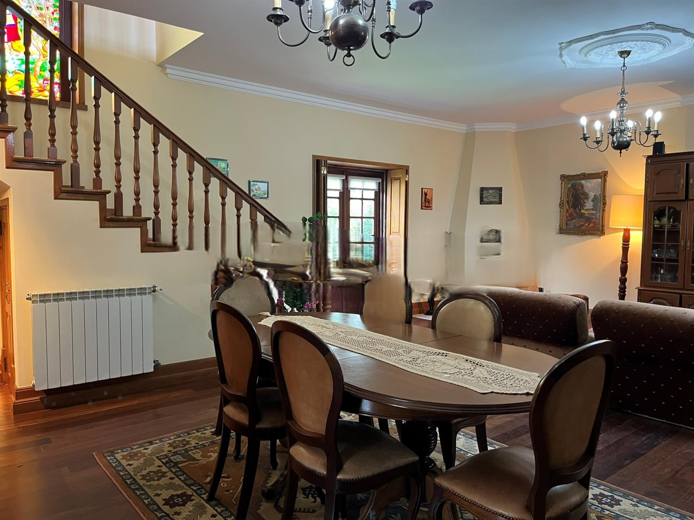

Bem-vindo à Quinta Flores
Uma experiência única em Ponte de Lima
Nossa História
A Quinta Flores nasceu do sonho de criar um espaço que combinasse o charme rústico do Minho com o conforto moderno. Localizada em uma das regiões mais pitorescas de Portugal, nossa propriedade preserva a arquitetura tradicional portuguesa enquanto oferece todas as comodidades contemporâneas.
Nossa Missão
Proporcionamos aos nossos hóspedes uma experiência autêntica do norte de Portugal, combinando hospitalidade calorosa com serviços de qualidade. Queremos que cada visitante se sinta em casa e leve consigo memórias inesquecíveis.
Valores
Sustentabilidade, autenticidade e hospitalidade são os pilares que guiam nossa operação. Valorizamos as tradições locais e nos esforçamos para preservar o ambiente natural que nos rodeia.
Nossas Instalações
Acomodações
- Quartos espaçosos com vista para o jardim
- Camas confortáveis com roupa de cama premium
- Ar condicionado e aquecimento
- Casa de banho privativa com amenities de qualidade
- Wi-Fi de alta velocidade
Áreas Comuns
- Piscina ao ar livre com espreguiçadeiras
- Jardins exuberantes para relaxar
- Área de churrasco totalmente equipada
- Espaço para camping com infraestrutura completa
- Estacionamento privativo gratuito
Experiências
- Trilhas para caminhada e ciclismo
- Degustação de vinhos locais
- Tours personalizados pela região
- Workshops de gastronomia tradicional
- Atividades para crianças
Localização Privilegiada
Pontos de Interesse Próximos
- Centro histórico de Ponte de Lima (5 min)
- Praia fluvial (10 min)
- Ecovia do Lima
- Área de Paisagem Protegida das Lagoas
- Festival Internacional de Jardins
Como Chegar
- 45 minutos do Aeroporto do Porto
- 30 minutos de Viana do Castelo
- 20 minutos de Braga
- Transporte privativo disponível
- Coordenadas GPS disponíveis
Nossa Galeria







